Cómo usar la pestaña Solicitudes
Aquí llegan los tickets que mandan las biólogas por el bot. Desde esta pestaña los aceptas, los cierras o los pasas a gestión, sin abrir la planilla. Todo lo que hagas queda guardado en la planilla Mantenciones a tu nombre.
Dónde está
Al entrar a la página con tu usuario, lo primero que ves es Solicitudes. Si te cambiaste a otra pestaña, vuelve tocando Solicitudes en el menú, arriba de todo. El número rojo indica cuántos tickets esperan que alguien los acepte.
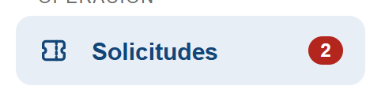
En el celular el menú se abre con el botón ☰ de arriba a la izquierda.
El tablero
Cada ticket es una tarjeta. La tarjeta avanza de izquierda a derecha según lo que vas haciendo con ella.
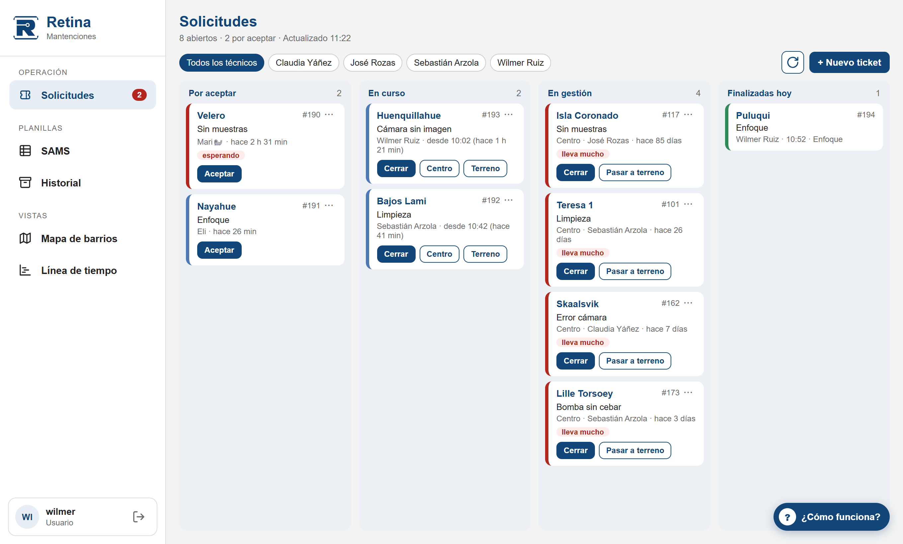
La página se actualiza sola cada minuto. Si quieres ver los cambios al tiro, toca el botón de recargar (la flecha en círculo).
Aceptar el ticket
Cuando empiezas a atender un ticket de Por aceptar, tócale Aceptar.
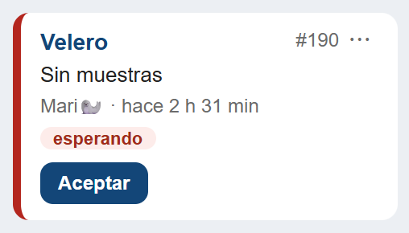
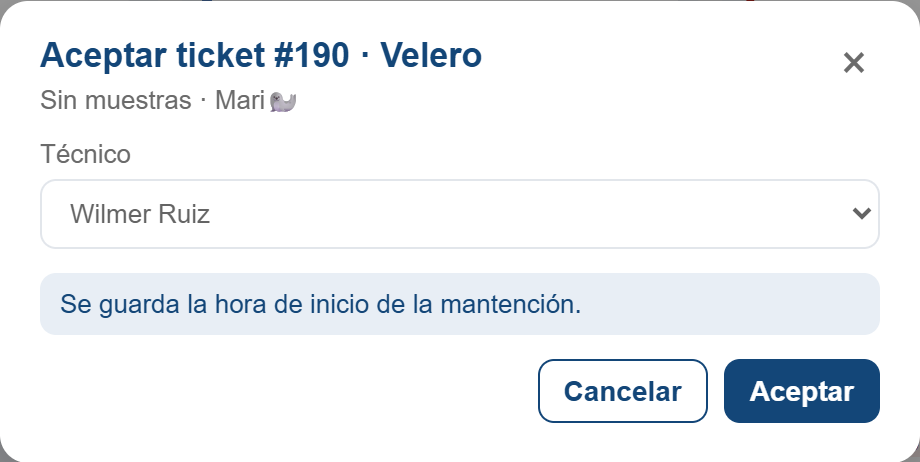
Se abre una ventana con tu nombre ya puesto. Revisa que sea el ticket correcto y toca Aceptar. Se guarda la hora en que empezaste, y la tarjeta pasa a En curso.
Terminar: Cerrar, Centro o Terreno
Un ticket En curso tiene tres botones. Usa el que corresponda según cómo terminó:
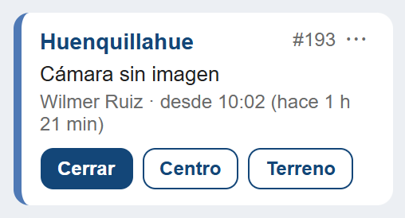
- Cerrar
- Lo resolviste. El ticket queda Finalizado.
- Centro
- Necesitas que el centro haga algo (revisar un cable, reiniciar algo). Pasa a Gestión centro.
- Terreno
- Hay que ir al centro. Pasa a Gestión terreno.
Cerrar el ticket
- Marca uno o más tipos de servicio (lo que hiciste). Puedes marcar varios.
- Escribe en Observaciones qué pasó y qué hiciste.
- Lee el recuadro azul: dice qué va a pasar al confirmar.
- Toca Cerrar ticket.
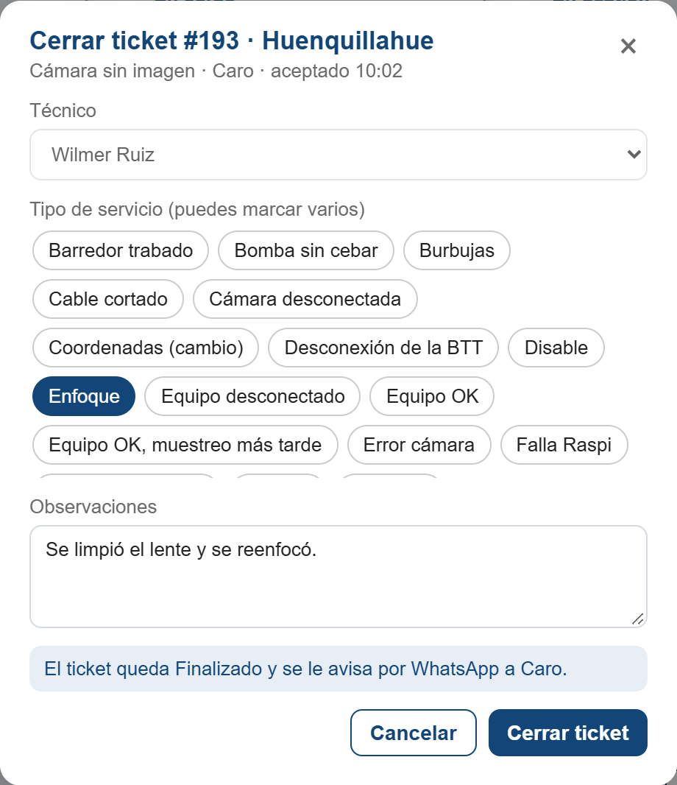
Pasar a gestión
Con Centro o Terreno se abre esta ventana. Escribe en Observaciones qué falta o qué le pediste al centro, y toca Pasar a gestión. Se avisa a Notion automáticamente.
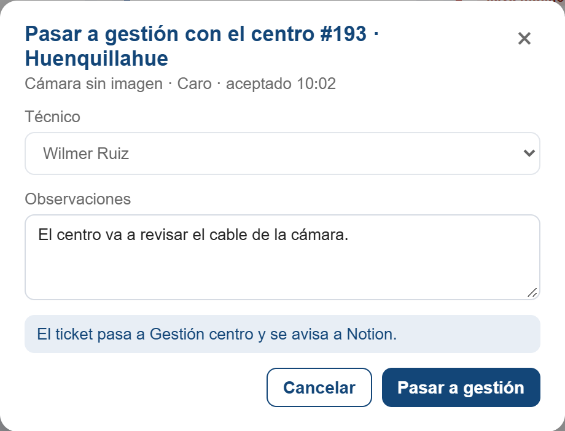
La tarjeta queda en En gestión. Desde ahí puedes cerrarla cuando se resuelva, o tocar Pasar a terreno si con ayuda del centro no se pudo y hay que ir.
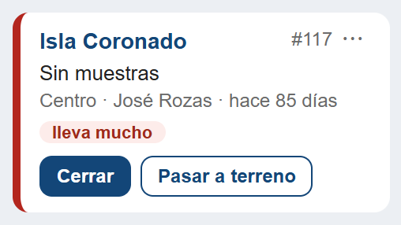
Finalizadas hoy
Lo que se cerró hoy aparece en la última columna, con el técnico, la hora y el tipo de servicio. Al día siguiente estas tarjetas ya no se muestran, pero siguen en la planilla.
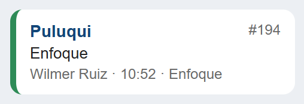
Crear un ticket tú mismo
Si encuentras un problema que nadie reportó, toca + Nuevo ticket arriba a la derecha. Elige el centro, marca el tipo de problema y escribe lo que viste. El ticket queda aceptado a tu nombre y aparece en En curso. Después lo cierras como cualquier otro.
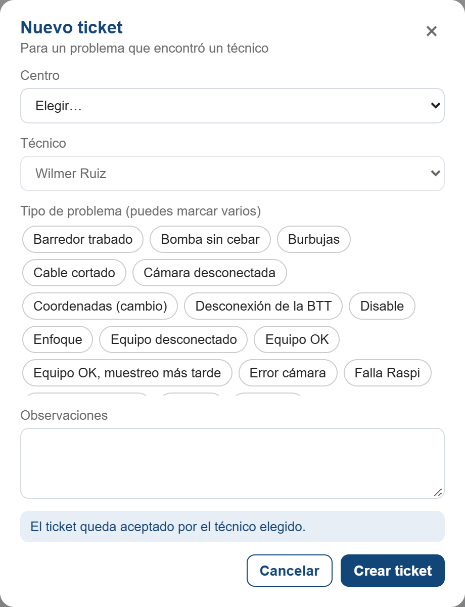
Corregir el centro o eliminar una solicitud
Cada ticket abierto tiene un botón ⋯ al lado de su número. Ábrelo cuando una solicitud llegó con el centro equivocado o no corresponde.
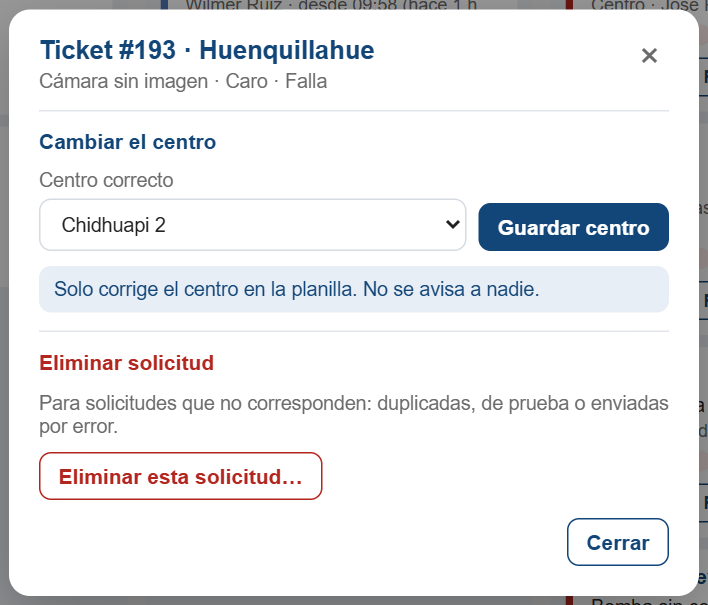
- Cambiar el centro
- Elige el centro correcto y toca Guardar centro. Solo se corrige en la planilla: no se avisa a la bióloga ni a Notion.
- Eliminar solicitud
- Solo para solicitudes duplicadas, de prueba o enviadas por error. Toca Eliminar esta solicitud…, escribe el motivo y el número del ticket. Recién ahí se activa el botón rojo.
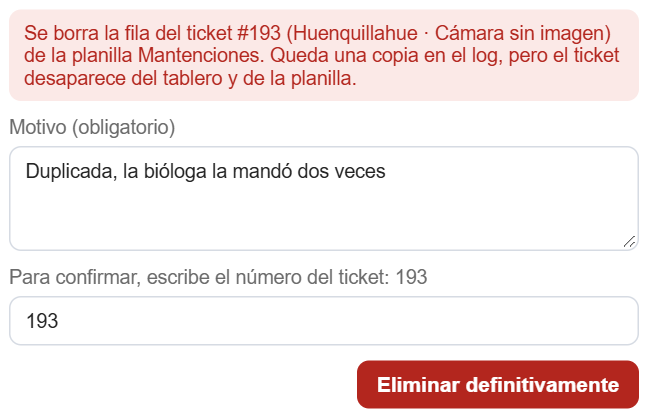
Qué significan los colores
Borde azul: recién llegado o en curso, todo normal.
Borde amarillo con “esperando”: lleva más de 30 minutos sin que nadie lo acepte.
Borde rojo con “esperando”: lleva más de 2 horas sin aceptar. Hay que tomarlo ya.
Borde morado: en gestión, dentro de plazo.
Borde rojo con “lleva mucho”: el ticket lleva más de 3 días en gestión. Hay que hacerle seguimiento.
Borde verde: finalizado.
Ver solo tus tickets
Arriba del tablero hay un botón por cada técnico. Toca tu nombre para ver solo lo tuyo en En curso, En gestión y Finalizadas. Por aceptar siempre muestra todo, porque esos tickets todavía no son de nadie.
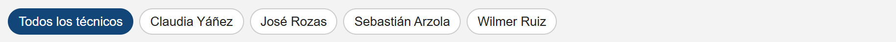
En el celular
Funciona igual. Las columnas se ven una al lado de la otra: desliza el dedo hacia la izquierda para pasar de Por aceptar a En curso, En gestión y Finalizadas.
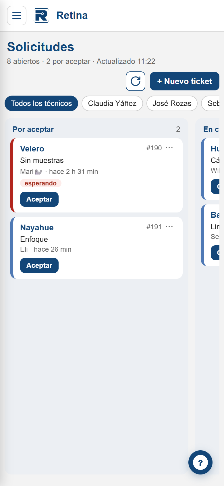
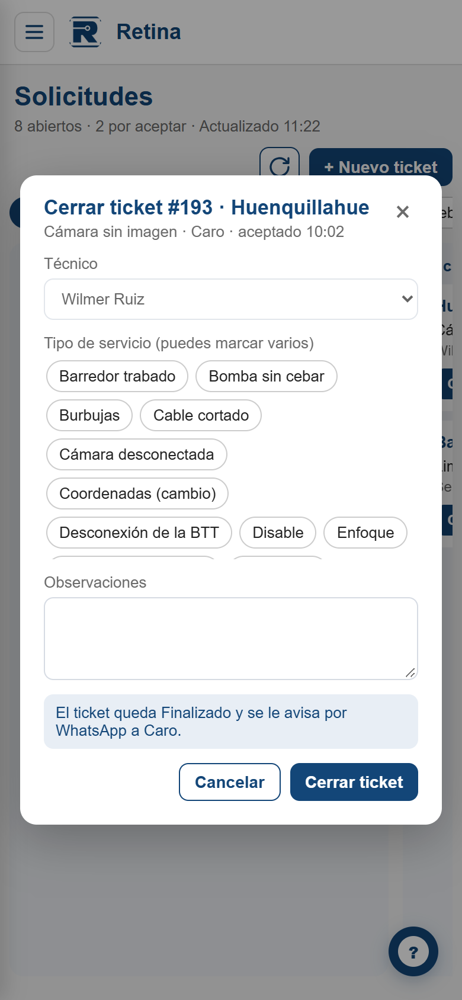
Preguntas frecuentes
- ¿Puedo aceptar o cerrar a nombre de otro técnico?
- No. El campo Técnico siempre muestra tu nombre y no se puede cambiar. Solo los administradores pueden elegir otro técnico.
- Me sale “Tu usuario no tiene un técnico asignado”.
- Avísale a Claudia para que asocie tu usuario a tu nombre.
- Me sale “El ticket cambió de lugar” o “ya fue aceptado”.
- Otra persona lo movió mientras lo tenías abierto. La página se recarga sola; revisa en qué columna quedó.
- Me sale un aviso de que no se pudo mandar el WhatsApp o avisar a Notion.
- El ticket sí quedó guardado en la planilla; lo que falló fue el aviso. Avísale a Claudia.
- ¿Sigo usando los botones de la planilla?
- Puedes, siguen funcionando. La página y la planilla escriben en el mismo lugar.